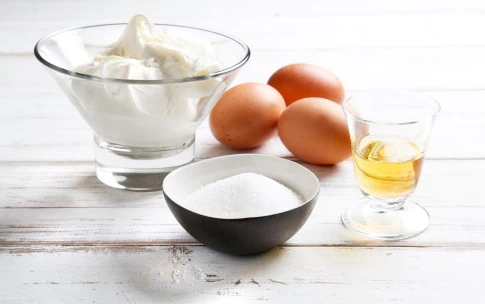
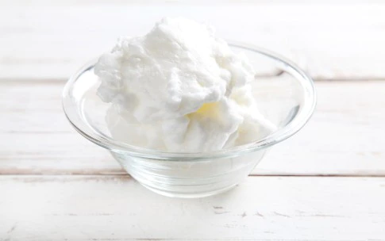
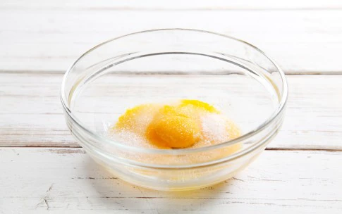
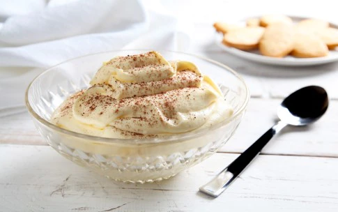

Ingredienti :
- 400 g di mascarpone
- 3 uova
- 6 cucchiai di zucchero
- 3 cucchiai di rum
Procedimento :
-

- Per prima cosa preparate tutti gli ingredienti. Ricordate che per montare correttamente l'albume non deve essere freddo, va portato a temperatura ambiente togliendolo dal frigorifero almeno 1 h prima di utilizzarlo.
- Per prima cosa con uno sbattitore montate gli albumi a neve ferma.
- In una terrina montate i tuorli con lo zucchero fino a ottenere un composto denso e spumoso. Aggiungete il rum e il mascarpone ai tuorli e amalgamate bene il tutto.
- In ultimo aggiungete, con delicatezza, l’albume montato a neve. Lasciate riposare la crema al mascarpone in frigorifero 1 h circa prima di servirla. Potete spolverizzarla un del cacao amaro in polvere se lo gradite.


